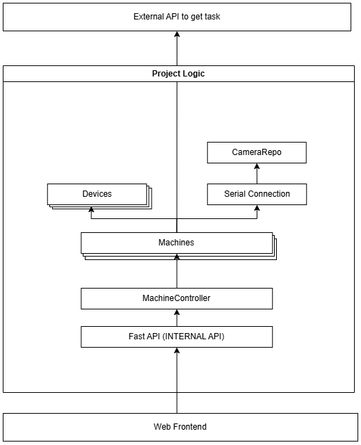

Project Architecture
ü߆ Overview
1. Project Architecture

The system is built around the Machine class.
-
Each
Machineholds:- Multiple references to
Deviceobjects - A single
SerialConnection - A
CameraRepo(indirectly, viaSerialConnection)
- Multiple references to
-
The
MachineControllerserves as the orchestrator:- It maintains a list of
Machineinstances - It provides high-level control and coordination between machines
- It exposes control methods to FastAPI (in
main.py)
- It maintains a list of
-
FastAPI exposes internal APIs to the frontend web UI for real-time control.
Component Breakdown
1. Machine Class
Description
The Machine class encapsulates all functionality related to a single physical machine. It manages:
- A list of
Devices(e.g., actuators or task points) - A
SerialConnection(for communication) - A
CameraRepo(for vision-based feedback)
Its responsibilities include: - Retrieving tasks from the server - Executing tasks asynchronously - Updating task completion status
When calling a method like get_rhb_task(), the server returns a structure like this:
{
"ResponseCode": 200,
"ResponseData": [
{
"TaskId": 1,
"BankUsername": "aaaaaaa",
"Slot": "1"
},
{
"TaskId": 3,
"BankUsername": "ccccccc",
"Slot": "2"
}
],
"ResponseMsg": "Success."
}
TaskId: The unique identifier for the task
Slot: Indicates the specific device to use within the machine
BankUsername: Metadata used during task execution
For each task in ResponseData, the machine will call approve_rhb() asynchronously. This enables multiple tasks to run concurrently for task in different devices.
For example:
Slot 1 → Device[0]
Slot 2 → Device[1]
Internal execution loop
When automation is triggered, the run_rhb_loop() method runs indefinitely until explicitly stopped.
1. Retrieve task
2. Begin task loop (via approve_rhb):
a. Move camera to the target device position
b. Capture image from the camera
c. Match image against predefined templates
d. Based on best match, determine next step
e. Repeat steps a–c for sub-tasks
f. Stop loop if:
- ✅ Task completed successfully
- ❌ Failure conditions met:
• Exceeded 7 cycles
• Failed 2 consecutive template matches
3. Update task status
4. Repeat from Step 1
Multiple machines can run this loop in parallel, independently.
IO Safeguards & Resource Management
Each machine is a limited and shared hardware resource. To ensure maximum concurrency without causing race conditions or unsafe operations, the Machine class uses asyncio.Lock() and asyncio.Event() for cooperative multitasking.
These synchronization primitives are initialized in the constructor:
class Machine:
def __init__(self, connection, id: int, cam_index: int):
self.lock: asyncio.Lock = asyncio.Lock()
self.stop_event: asyncio.Event = asyncio.Event()
self.id: int = id
self.cam_index: int = cam_index
self.connection: SerialConnection = connection
self.devices: List[DeviceAction] = [
DeviceAction(connection, 18, 28, 1),
DeviceAction(connection, 105, 28, 2),
DeviceAction(connection, 192, 28, 3),
DeviceAction(connection, 279, 28, 4)
]
self.is_running: bool = False
self.is_enabled: bool = True
Why Use Lock?
Any function that mutates the state of the machine — like stopping a task — must acquire the lock first. This ensures that no two asynchronous routines modify or interfere with the machine at the same time.
Here’s an example from the trigger_stop() method:
async def trigger_stop(self):
async with self.lock:
self.stop_event.set()
self.is_running = False
Benefits of Using asyncio.Lock()
-
Ensures safe command execution Prevents mid-task state changes, which could corrupt the machine’s state or cause unexpected hardware behavior.
-
Prevents overlapping access Since multiple tasks can be scheduled concurrently, the lock ensures one task finishes interacting with the machine before another begins.